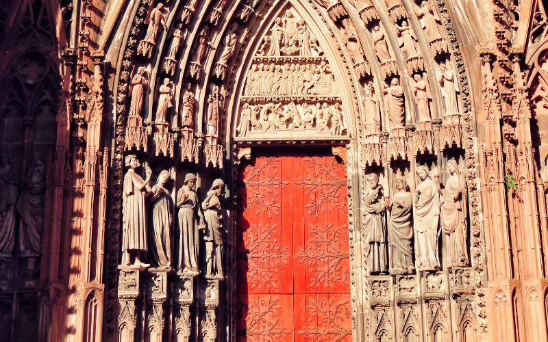

Commençons par une évidence qu'on oublie parfois : Strasbourg est une ville qui vit à plusieurs vitesses. Il y a la ville touristique, celle de la Petite France et des bateaux-mouches. Il y a la ville institutionnelle, siège du Parlement européen et du Conseil de l'Europe. Et il y a la ville du quotidien, étudiante, cycliste, animée toute l'année. Pour un team building, c'est cette superposition qui fait toute la richesse du terrain.
Et contrairement à une idée reçue, organiser un team building à Strasbourg ne veut pas dire se contenter d'une visite guidée de la cathédrale. La ville regorge de formats bien plus engageants pour vos équipes.
Strasbourg, une ville à comprendre avant de choisir son activité
Un peu de contexte pour commencer.
La Grande Île de Strasbourg a été le premier centre historique urbain entièrement classé au patrimoine mondial de l'UNESCO, en 1988, une distinction rare pour un centre-ville encore pleinement vivant, pas figé en musée à ciel ouvert. La cathédrale Notre-Dame, avec sa flèche unique culminant à 142 mètres, est restée l'un des plus hauts édifices du monde pendant des siècles.
Le marché de Noël de Strasbourg, le Christkindelsmärik, existe depuis 1570, c'est l'un des plus anciens de France. La ville se surnomme officiellement "Capitale de Noël" depuis 1992. Mais Strasbourg est aussi le siège du Parlement européen et du Conseil de l'Europe : peu de villes de cette taille cumulent un tel poids patrimonial et institutionnel.
Pourquoi c'est pertinent pour le team building ? Parce que cette double identité, ville historique et ville européenne, crée des cadres uniques. Un débrief d'équipe avec vue sur les toits de la Petite France n'a pas le même impact qu'une salle de réunion standard. Et la dimension européenne parle particulièrement aux équipes internationales ou aux entreprises avec des collaborateurs de plusieurs pays.
Les activités qui marchent bien à Strasbourg
L'escape game narratif immersif
Strasbourg concentre plusieurs formats d'escape game de qualité, du plus classique au plus scénarisé. Les versions à décors poussés et narration travaillée créent une cohésion naturelle, les équipes collaborent sans même s'en rendre compte, concentrées sur l'histoire à résoudre.
🔍 Escape game narratif immersif
Scénario travaillé, décors soignés, énigmes scénarisées. Format particulièrement adapté aux groupes qui cherchent une expérience qualitative plutôt qu'un simple jeu de logique. Dès 25€/pers., à partir de 3 participants.
Jeux & Digital · Cohésion · CommunicationL'escape game clé en main, dans vos propres locaux
Pour les équipes qui n'ont pas le temps ou l'envie de se déplacer, certains prestataires strasbourgeois transforment directement vos bureaux en terrain d'aventure : scénario d'espionnage, énigmes et manipulation d'objets, le tout encadré par des maîtres du jeu qui se déplacent chez vous. Zéro contrainte logistique, résultat garanti.
L'atelier poterie & céramique alsacienne
Dans un registre plus calme, l'atelier poterie inspiré des motifs traditionnels alsaciens combine créativité et détente. Les équipes conçoivent et réalisent leurs propres pièces, un format apprécié pour sa dimension bien-être autant que pour la cohésion qu'il génère par le travail manuel partagé.
🏺 Atelier poterie & céramique alsacienne
Conception et réalisation de pièces inspirées des motifs traditionnels d'Alsace, en équipe. Format demi-journée, accessible dès 6 personnes. Cohésion, créativité et détente au programme.
Créatif · Bien-être · CommunicationLe rallye en gyropode dans les rues historiques
Découvrir la Grande Île en gyropode, à travers un parcours ponctué d'énigmes et de défis, c'est une manière de faire bouger les équipes tout en explorant le patrimoine strasbourgeois autrement qu'à pied. Prise en main rapide, format accessible à la plupart des niveaux physiques.

Dégustation sensorielle et brassage de bière artisanale
Côté gourmand, deux formats fonctionnent particulièrement bien en équipe : la dégustation sensorielle à l'aveugle, qui mobilise l'écoute et la confiance entre collègues, et l'atelier de brassage de bière artisanale, où chaque groupe conçoit sa propre recette avant une dégustation conviviale en fin de session.
Strasbourg pour un séminaire + team building
Strasbourg bénéficie d'une accessibilité rare pour une ville de sa taille. Le TGV Paris-Strasbourg met 1h47, ce qui en fait une destination réaliste pour un séminaire d'une journée depuis la capitale. L'aéroport international et la proximité immédiate de l'Allemagne (Kehl est juste de l'autre côté du Rhin, à pied depuis le centre) en font aussi une base pertinente pour des équipes transfrontalières.
La ville dispose d'une offre hôtelière et de salles de séminaire dense, du centre historique aux quartiers d'affaires proches de la gare. C'est un vrai avantage logistique quand on organise une journée qui combine travail et activité de cohésion.
L'idée de journée complète : Matinée séminaire dans un espace du centre-ville ou près de la gare. Déjeuner dans une winstub de la Petite France. Après-midi escape game ou atelier créatif. Fin de journée en balade dans le quartier historique, ou marché de Noël si la saison s'y prête. Budget indicatif : 110 à 170€ par personne tout compris pour une équipe de 15 à 30 personnes.
Ce que Strasbourg offre que les autres villes n'ont pas
Trois choses, concrètement.
Un patrimoine UNESCO en plein centre-ville. Peu de team buildings peuvent se dérouler à quelques minutes à pied d'un site classé au patrimoine mondial. La Petite France et ses maisons à colombages offrent un cadre photogénique qui marque les esprits, un vrai atout pour la dimension "souvenir partagé" du team building.
La dimension européenne. Pour les entreprises avec des équipes internationales ou des clients européens, organiser un événement dans la ville du Parlement européen envoie un signal. Ce n'est pas qu'un argument marketing : la ville est habituée à recevoir des délégations de toute l'Europe, l'infrastructure d'accueil suit.
L'accès direct à la Route des Vins. Obernai, Molsheim et les premiers villages viticoles sont à moins de 30 minutes du centre. Pour prolonger un séminaire par une après-midi ou une soirée dans les vignes, la logistique est minimale, contrairement à d'autres bases alsaciennes plus excentrées.
La saison idéale pour un team building à Strasbourg
Printemps (avril à juin) : très bon choix. Les terrasses rouvrent, les activités outdoor comme le rallye en gyropode sont dans leurs meilleures conditions, et la ville est moins chargée qu'en été.
Automne (septembre à octobre) : lumière chaude sur les colombages, vendanges dans les environs, parfait pour combiner activité en ville et sortie Route des Vins.
Décembre : incontournable pour une raison précise, le marché de Noël. Une journée team building suivie d'une soirée au marché, vin chaud compris, c'est un classique qui fonctionne à tous les coups pour une clôture d'année. Anticipez largement les réservations, c'est la période la plus demandée de l'année.
Toutes les activités disponibles à Strasbourg
Filtrez par univers, format et budget, et trouvez ce qui correspond à votre équipe.